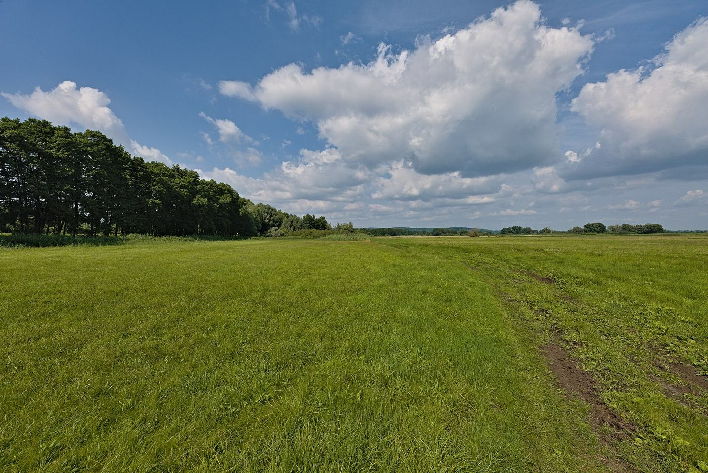
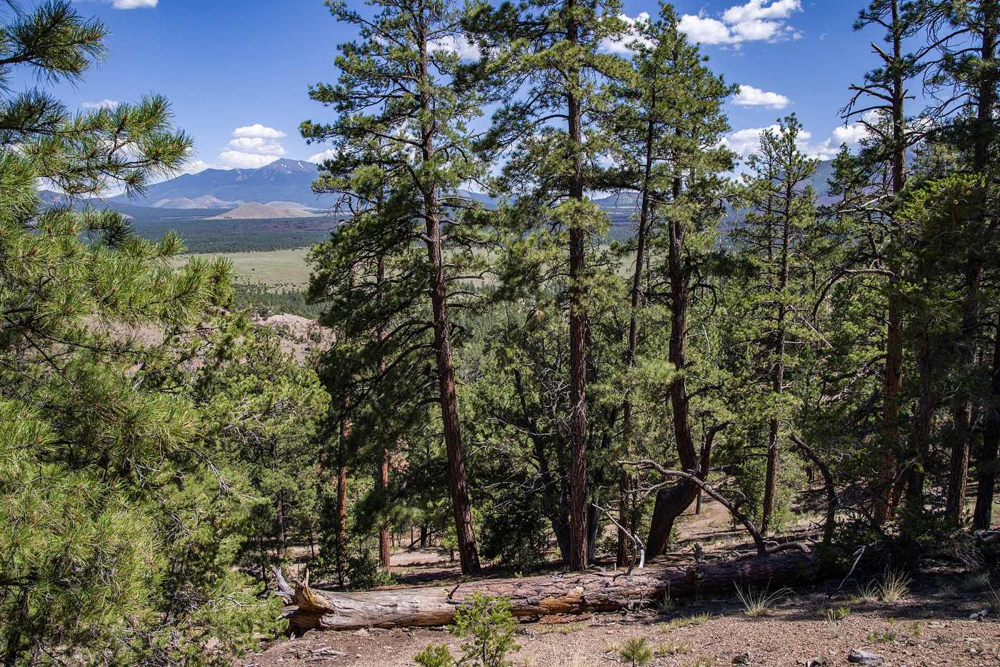

メニュー
朝はモーニング、金・土・日曜はランチも。料理の内容・価格の詳細は準備中です。
モーニング
朝7時から11時まで(Instagram表記)。内容・価格は準備中。
ランチ
金・土・日曜の12時から15時(Instagram表記)。ピザやガレットなどを出していた時期があるようです(2021年の個人ブログの記述)。現在のメニューは準備中。
ドリンク
コーヒーなどのドリンク。詳細は準備中。


口コミ
以下は制作側が作った「イメージ例」です。実在のお客様の声ではありません。
朝いちばんに温かいコーヒーを飲むと、白馬の一日が静かに始まる気がします。
大きな窓から入る光が気持ちよさそうで、朝の散歩のついでに寄ってみたいです。
週末のランチもあると知って、旅の予定に入れたくなりました。
お店について
朝の白馬に開いている、小さなカフェ。
Instagram(@cafe_zermatt)によると、営業は「morning 7:00〜11:00」、水曜定休で、金・土・日曜は「Lunch 12:00〜15:00」も。2021年の個人ブログでは、窓が大きく開放的なテラス席のあるカフェとして紹介されています。
店名のツェルマットは、スイスの山あいの村と同じ綴りです。店名の由来はお店から確認できていないため、この雰囲気づくりは制作側のイメージです。山に囲まれた白馬の朝に似合う名前、と感じて、このページの色や言葉を決めました。




掲載の写真はすべてフリー素材のイメージで、店舗の実際の様子ではありません。実際の店内・商品写真はご提供いただいたものに差し替えます。
アクセス
- 住所
- 〒399-9301 長野県北安曇郡白馬村北城3020−721
- 営業時間
- 朝 7:00〜11:00 / 金・土・日 ランチ 12:00〜15:00(Instagram表記。最新情報はInstagramでご確認ください)
- 定休日
- 水曜日(Instagram表記)
- 電話
- 準備中
- 価格
- 準備中
写真クレジット
写真はすべてWikimedia Commonsのフリー素材です(撮影地は不明または記載を省略)。ライセンス: CC0 1.0 / CC BY-SA 3.0 / CC BY-SA 2.5
- Lake Mountain Landscape / Bonnie Moreland / CC0 / 出典
- Pizza 25 / Kurt Kaiser / CC0 / 出典
- Toasted oatmeal bread with butter and apple butter / Daderot / CC0 / 出典
- Hot chocolate (Unsplash) / Alisa Anton / CC0 / 出典
- Pumpkin latte Tullys / さえぼー / CC0 / 出典
- Pine cone and snow dusting / MarkBuckawicki / CC0 / 出典
- Window frame shadow on a curtain (Unsplash) / Steinar Engeland / CC0 / 出典
- Oatmeal with a cherry compote / Chandapiwa Malema / CC0 / 出典
- Meadow in Niederfinow 2021-07-17 08 / Leonhard Lenz / CC0 / 出典
- Slate Mountain Trail (36788050091) / Coconino National Forest / CC0 / 出典
- Beans (42182293175) / Skitterphoto / CC0 / 出典(Wikimedia Commons)
- Croissant, whole / SKopp / CC BY-SA 3.0 / 出典(Wikimedia Commons)
- Bread roll with crumb hole, frontal view / SKopp / CC BY-SA 3.0 / 出典(Wikimedia Commons)
- Kaisersemmel / Kobako / CC BY-SA 2.5 / 出典(Wikimedia Commons)


.jpg){kind=link}


.jpg){kind=link}


.jpg){kind=link}